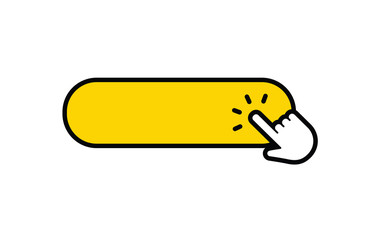

<a target="_blank" href="https://en.wikipedia.org/wiki/JavaScript#History">
  
</a>

<figure>
  
  <figcaption>
    Obrazek przedstawiający CTA - Call To Action.
    Zwykle jest to link lub przycisk z główną akcją danej strony.
    Na przykład przeniesienie do sklepu aby kupić produkt.
  </figcaption>
</dupa>


